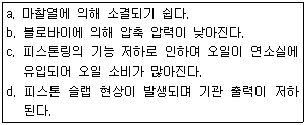
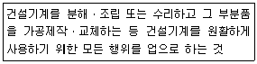
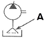

지게차유사(롤러,기중기등) (2015-07-19 기출문제)
1. 냉각장치에서 라디에이터의 구비 조건으로 틀린 것은?
- 공기의 흐름 저항이 클 것
- 단위 면적 당 방열량이 클 것
- 가볍고 작으며 강도가 클 것
- 냉각수의 흐름 저항이 적을 것
(정답률: 69%)

2. 공회전 상태의 기관에서 크랭크축의 회전과 관계없이 작동되는 기구는?
- 발전기
- 캠 샤프트
- 플라이 휠
- 스타트 모터
(정답률: 51%)
3. 4행정 사이클 기관의 윤활방식 중 피스톤과 피스톤 핀까지 윤활유를 압송하여 윤활 하는 방식은?
- 전 압력식
- 전 압송식
- 전 비산식
- 압송 비산식
(정답률: 71%)
4. 수랭식 냉각 방식에서 냉각수를 순환시키는 방식이 아닌 것은?
- 자연 순환식
- 강제 순환식
- 진공 순환식
- 밀봉 압력식
(정답률: 47%)
5. 디젤기관 연료장치 내에 있는 공기를 배출하기 위하여 사용하는 펌프는?
- 연료 펌프
- 공기 펌프
- 인젝션 펌프
- 프라이밍 펌프
(정답률: 72%)
6. 엔진 오일의 구비조건으로 틀린 것은?
- 응고점이 높을 것
- 비중과 점도가 적당할 것
- 인화점과 발화점이 높을 것
- 기포 발생과 카본 생성에 대한 저항력이 클 것
(정답률: 63%)
7. 디젤기관에서 직접 분사실식의 장점이 아닌 것은?
- 연료소비량이 적다.
- 냉각손실이 적다.
- 연료계통의 연료누출 염려가 적다.
- 구조가 간단하여 열효율이 높다.
(정답률: 40%)
8. 엔진의 회전수를 나타낼 때 rpm이란?
- 시간당 엔진회전수
- 분당 엔진회전수
- 초당 엔진회전수
- 10분간 엔진회전수
(정답률: 82%)
9. 기관의 실린더 수가 많을 때의 장점이 아닌 것은?
- 기관의 진동이 작다.
- 저속 회전이 용이하고, 큰 동력을 얻을 수 있다.
- 연료 소비가 적고 큰 동력을 얻을 수 있다.
- 가속이 원활하고 신속하다.
(정답률: 62%)
10. 팬벨트에 대한 점검과정이다. 가장 적합하지 않은 것은?
- 팬벨트는 눌러(약 10kgf) 처짐이 약 13~20㎜ 저도로 한다.
- 팬벨트는 풀리의 밑 부부분에 접촉되어야 한다.
- 팬벨트의 조정은 발전기를 움직이면서 조정한다.
- 팬벨트가 너무 헐거우면 기관 과열의 원인이 된다.
(정답률: 55%)
11. 실린더 헤드 개스킷에 대한 구비 조건으로 틀린 것은?
- 기밀 유지가 좋을 것
- 내열성과 내압성이 있을 것
- 복원성이 적을 것
- 강도가 적당할 것
(정답률: 81%)
12. 다음 보기에서 피스톤과 실린더 벽 사이의 간극이 클 때 미치는 영향을 모두 나타낸 것은?

- a, b, c
- c, d
- b, c, d
- a, b, c, d
(정답률: 68%)
13. 축전지 커버에 붙은 전해액을 세척하려 할 때 사용하는 중화제로 가장 좋은 것은?
- 증류수
- 비눗물
- 암모니아수
- 베이킹 소다수
(정답률: 59%)
14. 기동회로에서 전력공급 선의 전압강하는 얼마이면 정상인가?
- 0.2V 이하
- 1.0V 이하
- 10.5V 이하
- 9.5V 이하
(정답률: 48%)
15. 납산 축전지의 전해액을 만들 때 황산과 증류수의 혼합 방법에 대한 설명으로 틀린 것은?
- 조금씩 혼합하며 잘 저어서 냉각시킨다.
- 증류수에 황산을 부어 혼합한다.
- 전기가 잘 통하는 금속제 용기를 사용하여 혼합한다.
- 추운 지방인 경우 온도가 표준온도 일 때 비중이 1.280이 되게 측정하면서 작업을 끝낸다.
(정답률: 76%)
16. 직류 발전기와 비교했을 때 교류 발전기의 특징으로 틀린 것은?
- 전압 조정기만 필요하다.
- 크기가 크고 무겁다.
- 브러시 수명이 길다.
- 저속 발전 성능이 좋다.
(정답률: 51%)
17. 좌·우측 전조등 회로의 연결 방법으로 옳은 것은?
- 직렬 연결
- 단식 배선
- 병렬 연결
- 직·병렬 연결
(정답률: 72%)
18. 전기가 이동하지 않고 물질에 정지하고 있는 전기는?
- 동전기
- 정전기
- 직류전기
- 교류전기
(정답률: 82%)
19. 토크 컨버트에서 회전력이 최대값이 될 때를 무엇이라 하는가?
- 토크 변환비
- 회전력
- 스톨 포인트
- 유체 충돌 손실비
(정답률: 53%)
20. 추진축의 각도 변화를 가능하게 하는 이음은?
- 자재 이음
- 슬립 이음
- 플랜지 이음
- 등속 이음
(정답률: 52%)
21. 타이어 롤러에서 전압은 무엇으로 조정하는가?
- 타이어의 자중
- 다짐속도와 밸러스트(Ballast)
- 밸러스트와 타이어 공기압
- 다짐속도와 타이어 공기압
(정답률: 48%)
22. 무한궤도식 굴삭기의 하부 주행체를 구성하는 요소가 아닌 것은?
- 스프로킷
- 주행모터
- 트랙
- 리어액슬
(정답률: 63%)
23. 앞바퀴 정렬 요소 중 캠버의 필요성에 대한 설명으로 틀린 것은?
- 앞차축의 휨을 적게 한다.
- 조향휠의 조작을 가볍게 한다.
- 조항 시 바퀴의 복원력이 발생한다.
- 토(Toe)와 관련성이 있다.
(정답률: 39%)
24. 트랙프레임 상부 롤러에 대한 설명으로 틀린 것은?
- 더블 플랜지형을 주로 사용한다.
- 트랙의 회전을 바르게 유지한다.
- 트랙이 밑으로 처지는 것을 방지한다.
- 전부 유동륜과 기동륜 사이에 1~2개가 설치된다.
(정답률: 43%)
25. 계통내의 최대 압력을 설정함으로서 계통을 보호하는 밸브는?
- 릴리프 밸브
- 릴레이 밸브
- 리튜싱 밸브
- 리타더 밸브
(정답률: 85%)
26. 플라이휠과 압력판 사이에 설치되어 있으며, 변속기 압력축을 통해 변속기에 동력을 전달하는 것은?
- 압력판
- 클러치 디스크
- 릴리스 레버
- 릴리스 포크
(정답률: 69%)
27. 유압유의 구비 조건으로 옳지 않은 것은?
- 비압축성이어야 한다.
- 점도지수가 커야 한다.
- 인화점 및 발화점이 높아야 한다.
- 체적 탄성계수가 작아야 한다.
(정답률: 47%)
28. 아스팔트피니셔에서 노면에 살포된 혼합재를 다져주는 역할을 하는 장치는?
- 피더
- 스프레이팅 스크루
- 스크리드
- 댐퍼
(정답률: 48%)
29. 롤러의 다짐작업 방법으로 틀린 것은?
- 소정의 접지 압력을 받을 수 있도록 부가하중을 증감한다.
- 다짐 작업 시 정지 시간은 길게 한다.
- 다짐 작업 시 급격한 조향은 하지 않는다.
- 1/2씩 중첩되게 다짐을 한다.
(정답률: 69%)
30. 아스팔트피니셔의 구조에 대한 설명으로 틀린 것은?
- 호퍼는 덤프트럭으로부터 혼합재를 받아들이는 것으로 호퍼의 전방에는 2개의 푸시롤러가 설치된다.
- 스크리드는 혼합재를 규정된 포장 폭에 맞춰 넓게 확산 시켜 주는 장치이다.
- 바이브레이터는 아스팔트 혼합재를 규정의 밀도가 되도록 눌러 다져주는 장치이다.
- 피더는 호퍼 내부의 혼합재를 스프레더 측으로 이송하는 장치이다.
(정답률: 30%)
31. 건설기계관리법령상 건설기계조종사 면허를 받지 아니하고 건설기계를 조종한 자에 대한 벌칙은?
- 3년 이하의 징역 또는 3천만 원 이하의 벌금
- 2년 이하의 징역 또는 2천만 원 이하의 벌금
- 1년 이하의 징역 또는 1천만 원 이하의 벌금
- 1년 이하의 징역 또는 5백만 원 이하의 벌금
(정답률: 75%)
32. 건설기계관리법령상 기중기를 조종할 수 있는 면허는?
- 공기압축기 면허
- 모터그레이더 면허
- 기중기 면허
- 타워크레인 면허
(정답률: 87%)
33. 건설기계관리법령상 정기검사 유효기간이 다른 건설기계는?
- 덤프트럭
- 콘크리트믹스트럭
- 타워크레인
- 굴삭기(타이어식)
(정답률: 69%)
34. 건설기계관리법령상 건설기계 형식 신고를 하지 아니할 수 있는 사람은?
- 건설기계를 사용목적으로 제작하려는 자
- 건설기계를 사용목적으로 조립하려는 자
- 건설기계를 사용목적으로 수입하려는 자
- 건설기계를 연구개발 목적으로 제작하려는 자
(정답률: 75%)
35. 건설기계관리법령상 자가용건설기계 등록 번호표의 도색으로 옳은 것은?
- 청색판에 백색문자
- 적색판에 흰색문자
- 백색판에 황색문자
- 녹색판에 흰색문자
(정답률: 77%)
36. 건설기계관리법령상 다음 설명에 해당하는 건설기계사업은?

- 건설기계정비업
- 건설기계제작업
- 건설기계매매업
- 건설기계폐기업
(정답률: 81%)
37. 건설기계관리법령상 건설기계를 도로에 계속하여 방치하거나 정당한 사유 없이 타인의 토지에 방치한 자에 대한 벌칙은?
- 2년 이하의 징역 또는 1천만 원 이하의 벌금
- 1년 이하의 징역 또는 1천만 원 이하의 벌금
- 2백만 원 이하의 벌금
- 1백만 원 이하의 벌금
(정답률: 65%)
38. 건설기계관리법령상 자동차 1종 대형 면허로 조종할 수 없는 건설기계는?
- 5톤 굴삭기
- 노상안정기
- 콘크리트펌프
- 아스팔트살포기
(정답률: 72%)
39. 건설기계관리법령상 미등록 건설기계의 임시운행 사유에 해당 되지 않는 것은?
- 등록신청을 하기 위하여 건설기계를 등록지로 운행하는 경우
- 등록신청 전에 건설기계 공사를 하기 위하여 임시로 사용하는 경우
- 수출을 하기 위하여 건설기계를 선적지로 운행하는 경우
- 신개발 건설기계를 시험·연구의 목적으로 운행하는 경우
(정답률: 79%)
40. 건설기계관리법령상 건설기계에 대하여 실시하는 검사가 아닌 것은?
- 신규 등록검사
- 예비검사
- 구조변경검사
- 수시검사
(정답률: 70%)
41. 유압 작동유의 점도가 너무 높을 때 발생되는 현상은?
- 동력손실 증가
- 내부누설 증가
- 펌프효율 증가
- 내부마찰 감소
(정답률: 67%)
42. 유압장치의 오일탱크에서 펌프 흡입구의 설치에 대한 설명으로 틀린 것은?
- 펌프 흡입구는 반드시 탱크 가장 밑면에 설치한다.
- 펌프 흡입구는 스트레이너(오일 여과기)를 설치한다.
- 펌프 흡입구와 탱크로의 귀환구(복귀구) 사이에는 격리판(baffle plate)을 설치한다.
- 펌프 흡입구는 탱크로의 귀환구(복귀구)로부터 될 수 있는 한 멀리 떨어진 위치에 설치한다.
(정답률: 49%)
43. 유압 실린더의 종류에 해당하지 않는 것은?
- 단동 실린더
- 복동 실린더
- 다단 실린더
- 회전 실린더
(정답률: 65%)
44. 유압모터의 특징 중 거리가 가장 먼 것은?
- 소형으로 강력한 힘을 낼 수 있다.
- 과부하에 대해 안전하다.
- 정·역회전 변화가 불가능하다.
- 무단변속이 용이하다.
(정답률: 61%)
45. 회로 내 유체의 흐름 방향을 제어하는데 사용되는 밸브는?
- 교축 밸브
- 셔틀 밸브
- 감압 밸브
- 순차 밸브
(정답률: 60%)
46. 유압장치에 사용되고 있는 제어밸브가 아닌 것은?
- 방향제어밸브
- 유량제어밸브
- 스프링제어밸브
- 압력제어밸브
(정답률: 76%)
47. 릴리프 밸브에서 볼이 밸브의 시트를 때려 소음을 발생시키는 현상은?
- 채터링(chattering) 현상
- 베이퍼 록(vaper lock) 현상
- 페이드(fade) 현상
- 노킹(knock) 현상
(정답률: 67%)
48. 기어식 유압펌프의 특징이 아닌 것은?
- 구조가 간단하다.
- 유압 작동유의 오염에 비교적 강한 편이다.
- 플런저 펌프에 비해 효율이 떨어진다.
- 가변 용량형 펌프로 적당하다.
(정답률: 39%)
49. 그림의 유압기호에서 “A”부분이 나타내는 것은?

- 오일 냉각기
- 스트레이너
- 가변용량 유압펌프
- 가변용량 유압모터
(정답률: 64%)
50. 오일의 압력이 낮아지는 원인과 가장 거리가 먼 것은?
- 유압펌프의 성능이 불량할 때
- 오일의 점도가 높아졌을 때
- 오일의 점도가 낮아졌을 때
- 계통 내에서 누설이 있을 때
(정답률: 61%)
51. 벨트 취급 시 안전에 대한 주의사항으로 틀린 것은?
- 벨트에 기름이 묻지 않도록 한다.
- 벨트의 적당한 유격을 유지하도록 한다.
- 벨트 교환 시 회전이 완전히 멈춘 상태에서 한다.
- 벨트의 회전을 정지시킬 때 손으로 잡아 정지시킨다.
(정답률: 89%)
52. ILO(국제노동기구)의 구분에 의한 근로 불능 상해의 종류 중 응급조치 상해는 며칠 간 치료를 받은 다음부터 정상작업에 임할 수 있는 정도의 상해를 의미하는가?
- 1일 미만
- 3~5일
- 10일 미만
- 2주 미만
(정답률: 57%)
53. 다음 중 보호구를 선택할 때의 유의 사항으로 틀린 것은?
- 작업 행동에 방해되지 않을 것
- 사용 목적에 구애받지 않을 것
- 보후고 성능기준에 적합하고 보호 성능이 보장될 것
- 착용이 용이하고 크기 등 사용자에게 편리할 것
(정답률: 78%)
54. 가스용기가 발생기와 분리되어 있는 아세틸렌 용접장치의 안전기 설치 위치는?
- 발생기
- 가스용접기
- 발생기와 가스용기 사이
- 용접토치와 가스용기 사이
(정답률: 71%)
55. 다음 중 산업재해 조사의 목적에 대한 설명으로 가장 적절한 것은?
- 적절한 예방대책을 수립하기 위하여
- 작업능률 향상과 근로기강 확립을 위하여
- 재해 발생에 대한 통계를 작성하기 위하여
- 재해를 유발한 자의 책임추궁을 위하여
(정답률: 79%)
56. 산업안전보건법령상 안전·보건표지의 종류 중 다음 그림에 해당하는 것은?
- 신화성물질경고
- 인화성물질경고
- 폭발성물질경고
- 급성독성물질경고
(정답률: 80%)
57. 다음 중 가열, 마찰, 충격 또는 다른 화학물질과의 접촉 등으로 인하여 산소나 산화재 등의 공급이 없더라도 폭발 등 격렬한 반응을 일으킬 수 있는 물질이 아닌 것은?
- 질산에스테르류
- 니트로 화합물
- 무기 화합물
- 니트로소 화합물
(정답률: 66%)
58. 기계설비의 위험성 중 접선물림점(tangential point)과 가장 관련이 적은 것은?
- V벨트
- 커플링
- 체인벨트
- 기어와 랙
(정답률: 64%)
59. 작업장에서 전기가 별도의 예고 없이 정전 되었을 경우 전기로 작동하던 기계·기구의 조치방법으로 가장 적합하지 않은 것은?
- 즉시 스위치를 끈다.
- 안전을 위해 작업장을 미리 정리해 놓는다.
- 퓨즈의 단선 유·무를 검사한다.
- 전기가 들어오는 것을 알기 위해 스위치를 켜 둔다.
(정답률: 86%)
60. 연삭기의 안전한 사용방법으로 틀린 것은?
- 숫돌 측면 사용 제한
- 숫돌덮개 설치 후 작업
- 보안경과 방진마스크 사용
- 숫돌과 받침대 간격을 가능한 넓게 유지
(정답률: 76%)